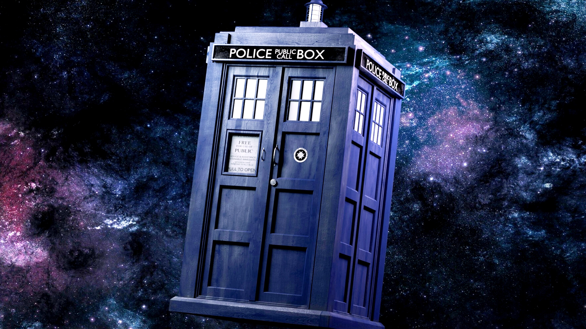

The TARDIS is a time machine and spacecraft that appears in the British science fiction television series Doctor Who and its various spin-offs. Due to the significance of Doctor Who in popular British culture, the shape of the police box has become associated with the TARDIS far more than its real-world inspiration.[nb 4] The name and design of the TARDIS is a registered trademark of the British Broadcasting Corporation (BBC), despite the fact that the design was originally created by the Metropolitan Police Service.
| OLD DOCTOR | 50% |
| NEW DOCTOR | 80% |